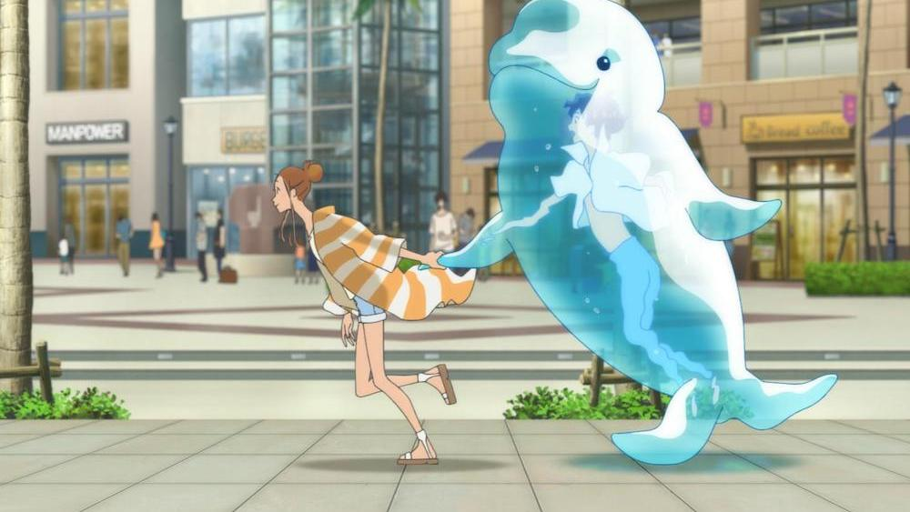

I'm a long-time fan of anime director Masaaki Yuasa, and was pleased when he founded the studio Science Saru to continue directing independent works. In 2017, they knocked it out of the park with their first two films, "Lu Over The Wall" and "Night is Short, Walk on Girl." Busy between these films and television projects, their third original film is 2019's "Ride Your Wave," a romantic-drama about a surfer who sees her deceased partner in the water everywhere she goes. Immediately, I had some concerns: despite the bit of fantasy-realism, the story appeared more grounded than what Yuasa normally creates. Certainly, his works are varied across many genres and themes, but his films and shows don't always work as well as they ought to. "Lu" played to his strengths in child-like purity and Tex-Avery-styled gags, and "Walk on Girl" perfectly used his unique style with quick-witted adult humor. With "Ride Your Wave," my concerns were understandable, and ultimately, well-founded, even if the film is still ultimately easy to recommend.Hinako Mukaimizu is a young woman who moves to a seaside Japanese town to study Marine Biology, while also enjoying a bit of surfing. After her apartment building catches fire, one handsome firefighter, the young Minato Hinageshi, hits it off with her. They meet later for Hinako to teach him surfing, which then turns to a second date, and then a montage of their budding relationship. Hinako is adorably cute and clumsy. Minato is... impossibly perfect (a clumsy co-firefighter, his junior, seems like a much more probably anime lead, and plays a small role later). Seeing them together as they share coffee, karaoke, dance, laugh and sing to each other is as sweet as can be. While sex isn't explicit, a brief scene of them singing to each other under the sheets naked makes it clear. They don't get to a proposal yet, but don't hide hints of their love and intentions to live with each other forever. It's sweet, sappy, but also mostly believable, moreso than most relationships portrayed on screen.... and then Minato dies. It's not really a shock, since the promotional material made it clear that THIS was the really story of the movie. Seeing the movie in a theater, I was still saddened, but took it as if I was an outsider, like a friend feeling sorry to the surviving family member. This likely wasn't intentional, but plays into how the viewer reads what occurs in the following scenes: Hinako takes Minato's death harder than anyone, cooping herself in a new apartment far away from the sea, but when she sings "their" song in front of water (a pool, a rain puddle, or just a glass of it), Minato's spirit seems to appear in front of her. This occurs in front of her friends at first, who don't see anything. It's pretty apparent that this is a figment of Hinako's imagination, a sign that she is unable to cope with the loss. This is especially clear when she carries Minato in a water bottle or a large inflatable water toy, talking and laughing to it, to the confusion and horror of all passersby. It's not until the climax that anyone else sees him, hinting that this was a mysterious force of magic afterall... but even then, only close friends who explictly thought of Minato in that moment seemed to see him, so they could also have temporarily given in to the madness.Anyway, the real theme isn't about ghosts, but of coping with loss and riding the unpredictable waves of life as they come. In case the surfing metaphor wasn't clear, Minato tells Hinako to "ride her waves" several times in the movie, as if the title itself was subtle enough on its own. It's a good and important theme, and it doesn't sugar-coat the feelings Hinako is going through. Even by the end, when she seems to have accepted Minato's passing, she still falls to her knees in tears. It's natural to miss him, but one has no choice but to get up and press on. As much as I can appreciate the intention, "Ride Your Wave" struggles a little to convey whatever it wants to say on the subject, adding in side-characters and scenes to fill out a movie that zips by pretty quickly.  Visually, "Ride Your Wave" shares a lot with "Lu Over The Wall," from its lanky human designs to the way water is animated (and even a quick reference or two to the former film). But largely, the art direction is purposely more grounded to match the story. Surprisingly, even some of the water effects and other background items are replaced with CGI models and effects. In many ways, this is a technically better-looking film, but also lacks a lot of the personality that made the previous two films such great works of animation. I saw the movie in a theater with the original Japanese dub, which put a lot on the shoulders of the actors, and they carry things well. The standout song used throughout is "Brand New Story," which Hinako has to sing every time she summons water Minato. Amazingly, it's not as annoying as I thought it'd be, and I was still humming the song as I left the theater (otherwise, the soundtrack is mostly just servicable). I'm personally both a sap and a cynic when it comes to these sad romance movies. They are engineered to make you emotional, and tend to be predictable as they do it. "Ride Your Wave" has all the strengths and weaknesses of that genre, but doesn't particularly take advantage of director Masaaki Yuasa's strengths: seemingly anyone at his studio could have directed this.... that's a little harsh. Actually, there are glimmers of Yuasa's charm in the movie, from Hinako's bright-eyed optimism and doubt living alone for the first time, to the imagination behind the climatic scene where she surfs her way out of a flaming skyscraper. And Yuasa has proven before that he understands the humaity behind relationships, and he makes use of that here as much as he can. I can't recall other films of this specific genre that are any better. And if you stayed away from Yuasa's work because they were "too weird," then "Ride Your Wave" is a safe and crowdpleasing tear-jerker that anyone can appreciate. Any remember kids, fireworks are dangerous, especially in urban settings. Only you can prevent apartment fires (seriously, the film's teenagers get off way too easy...).
- "Ani" More reviews can be found at : https://2danicritic.github.io/ Previous review: review_Redline Next review: review_Rin_-_Daughters_of_Mnemosyne